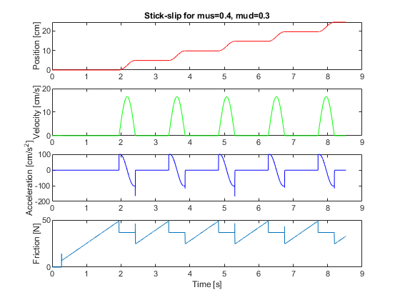
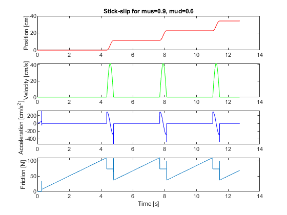
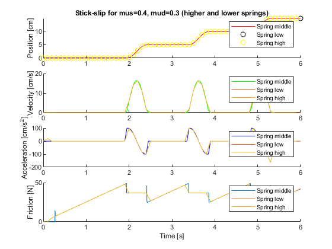

clc,clear,close all
data = load('hw12_dry.dta');
data_neo = load('hw12_neolite.dta');
data_low = load('hw12_lowspring.dta');
data_high = load('hw12_highspring.dta');
t = data(:,1);
t2 = data_neo(:,1);
pos_dry = data(:,2);
vel_dry = data(:,3);
acc_dry = data(:,4);
Fforce_dry = data(:,8);
pos_neo = data_neo(:,2);
vel_neo = data_neo(:,3);
acc_neo = data_neo(:,4);
Fforce_neo = data_neo(:,8);
t_low = data_low(:,1);
pos_low = data_low(:,2);
vel_low = data_low(:,3);
acc_low = data_low(:,4);
Fforce_low = data_low(:,8);
t_high = data_high(:,1);
pos_high = data_high(:,2);
vel_high = data_high(:,3);
acc_high = data_high(:,4);
Fforce_high = data_high(:,8);
t_index = find(t==1);
acc_dry(1:t_index) = 0;
figure(1)
subplot(4,1,1)
plot(t,pos_dry,'r')
ylabel('Position [cm]')
title('Stick-slip for mus=0.4, mud=0.3')
subplot(4,1,2)
plot(t,vel_dry,'g')
ylabel('Velocity [cm/s]')
subplot(4,1,3)
plot(t,acc_dry,'b')
ylabel('Acceleration [cm/s^2]')
subplot(4,1,4)
plot(t,Fforce_dry)
ylabel('Friction [N]')
xlabel('Time [s]')
figure(2)
subplot(4,1,1)
plot(t2,pos_neo,'r')
ylabel('Position [cm]')
title('Stick-slip for mus=0.9, mud=0.6')
subplot(4,1,2)
plot(t2,vel_neo,'g')
ylabel('Velocity [cm/s]')
subplot(4,1,3)
plot(t2,acc_neo,'b')
ylabel('Acceleration [cm/s^2]')
subplot(4,1,4)
plot(t2,Fforce_neo)
ylabel('Friction [N]')
xlabel('Time [s]')
step = 50;
figure(3)
subplot(4,1,1)
hold on
plot(t(1:find(t == 6)),pos_dry(1:find(t == 6)),'r')
plot(t_low(1:step:find(t_low == 6)),pos_low(1:step:find(t_low == 6)),'blao')
plot(t_high(1:step:find(t_high == 5.9)),pos_high(1:step:find(t_high == 5.9)),'yo')
ylabel('Position [cm]')
title('Stick-slip for mus=0.4, mud=0.3 (higher and lower springs)')
legend('Spring middle', 'Spring low', 'Spring high')
hold off
subplot(4,1,2)
hold on
plot(t(1:step:find(t == 6)),vel_dry(1:step:find(t == 6)),'g')
plot(t_low(1:step:find(t_low == 6)),vel_low(1:step:find(t_low == 6)))
plot(t_high(1:step:find(t_high == 5.9)),vel_high(1:step:find(t_high == 5.9)))
ylabel('Velocity [cm/s]')
legend('Spring middle', 'Spring low', 'Spring high')
hold off
subplot(4,1,3)
hold on
plot(t(1:step:find(t == 6)),acc_dry(1:step:find(t == 6)),'b')
plot(t_low(1:step:find(t_low == 6)),acc_low(1:step:find(t_low == 6)))
plot(t_high(1:step:find(t_high == 5.9)),acc_high(1:step:find(t_high == 5.9)))
ylabel('Acceleration [cm/s^2]')
legend('Spring middle', 'Spring low', 'Spring high')
hold off
subplot(4,1,4)
hold on
plot(t(1:find(t == 6)),Fforce_dry(1:find(t == 6)))
plot(t_low(1:step:find(t_low == 6)),Fforce_low(1:step:find(t_low == 6)))
plot(t_high(1:step:find(t_high == 5.9)),Fforce_high(1:step:find(t_high == 5.9)))
ylabel('Friction [N]')
xlabel('Time [s]')
legend('Spring middle', 'Spring low', 'Spring high')
hold off
hold off
  